Publications
Journal articles, manuscripts and conference presentations, newest first.
Journal articles
- 2023
Evaluating spatial and elevation-wise daytime/nighttime LST trends across the Indus River Basin
- 2023
Analyzing the Possibilities and Prospects of 24/7 Water Supply in Delhi, India
Manuscripts
- 2025–26
Predicting Uranium Occurrences in Groundwater throughout India
Submitted to journal - 2026
Comparing and Benchmarking Deep Learning Models for Predicting Groundwater Contamination caused by Fluoride with the effects of Spatial Resolution on Prediction
In progress - 2026
A Physically Informed Framework for Multi-Resolution Downscaling and Upscaling of Environmental Predictors (Satellite Data)
In progress
Conference presentations
- Apr 2026
A Machine Learning-Based Framework for Uranium Risk Assessment, Population Exposure and Groundwater Governance in Urban India
First Position, oral presentation, and Best Paper AwardPhotos and certificate
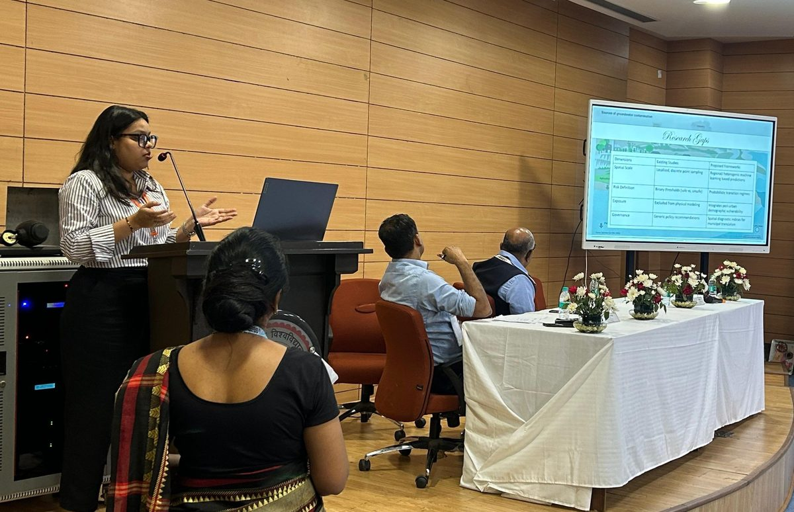
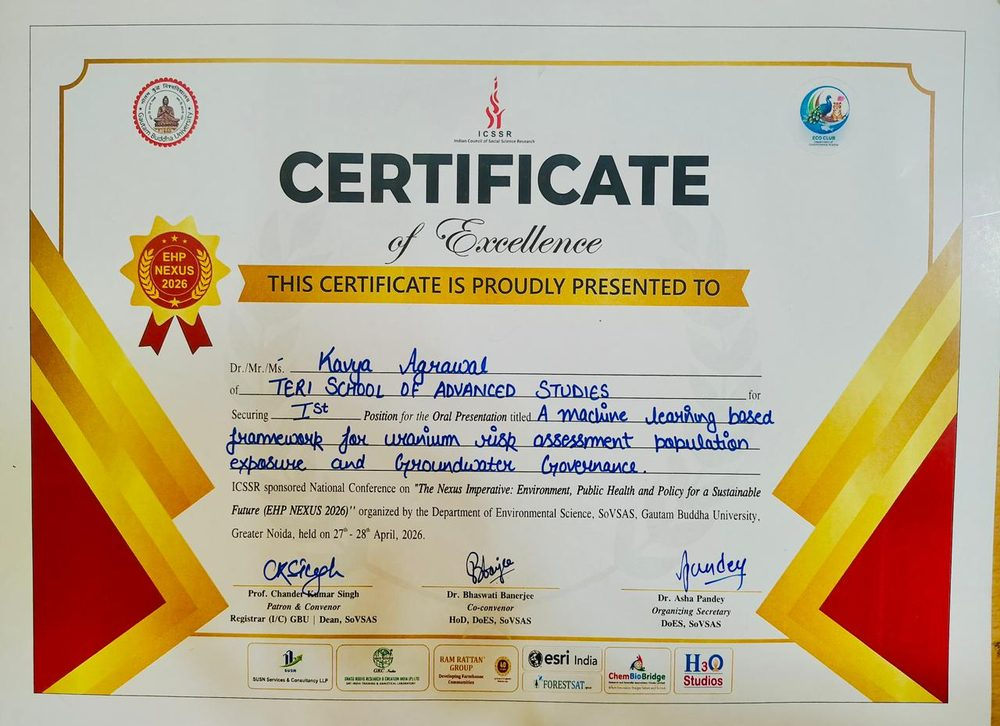
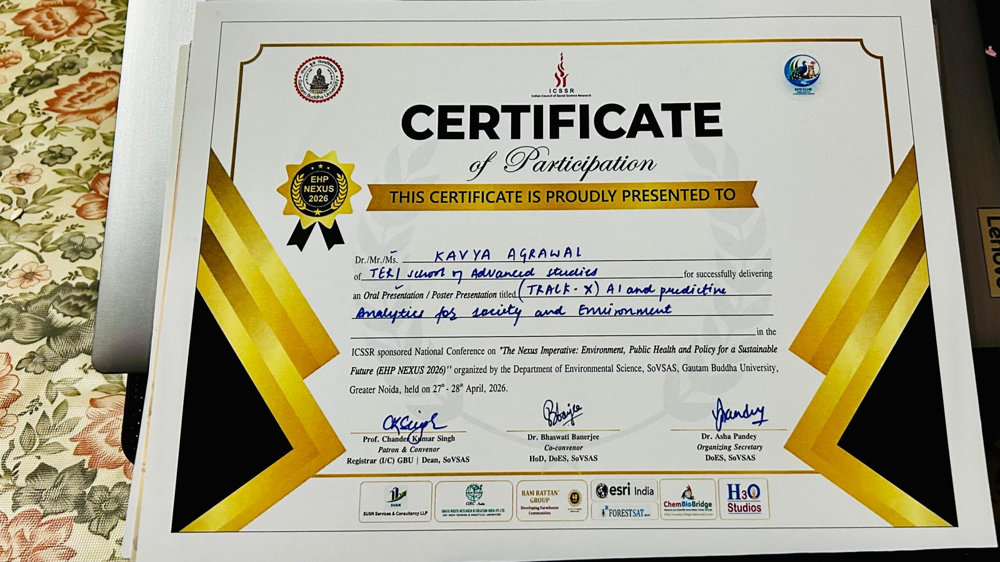
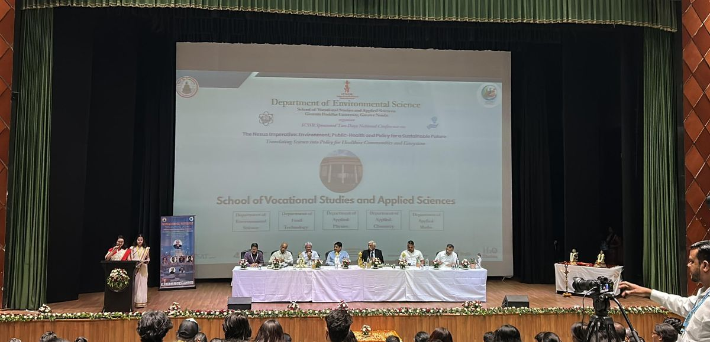
Conference: The Nexus Imperative: Environment, Public Health and Policy for a Sustainable Future, organised by the Department of Environmental Science, SoVSAS, Gautam Buddha University, Greater Noida.
- Oct 2024
Distribution, Speciation and Controls on As Mobilization in the Groundwater in Aquifers of the Middle Gangetic Plain, India
Photos and certificate
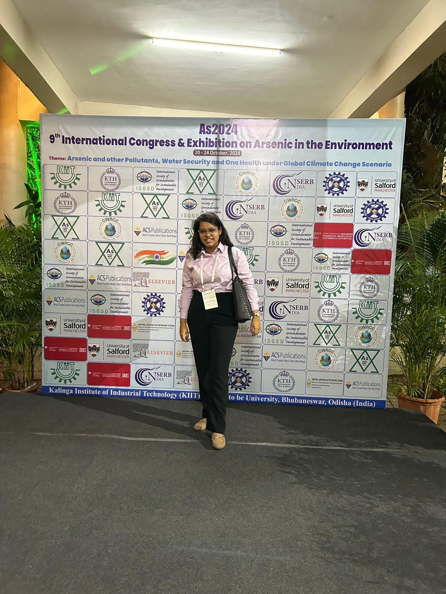
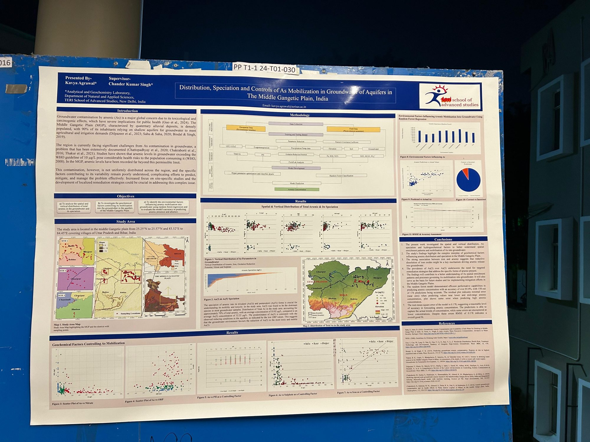
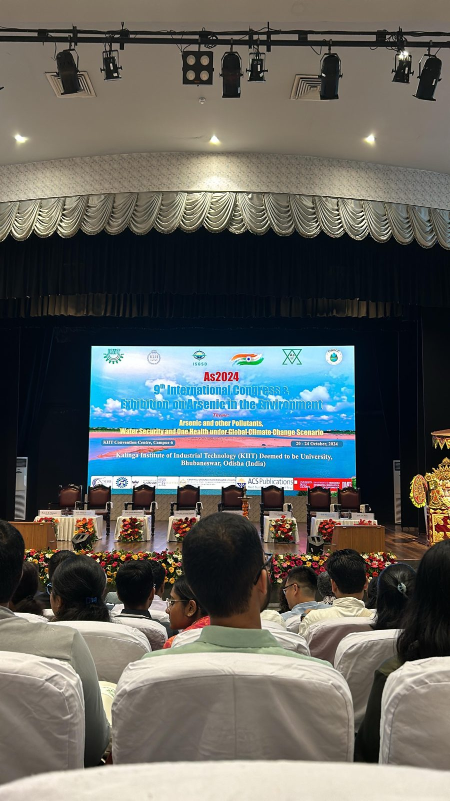
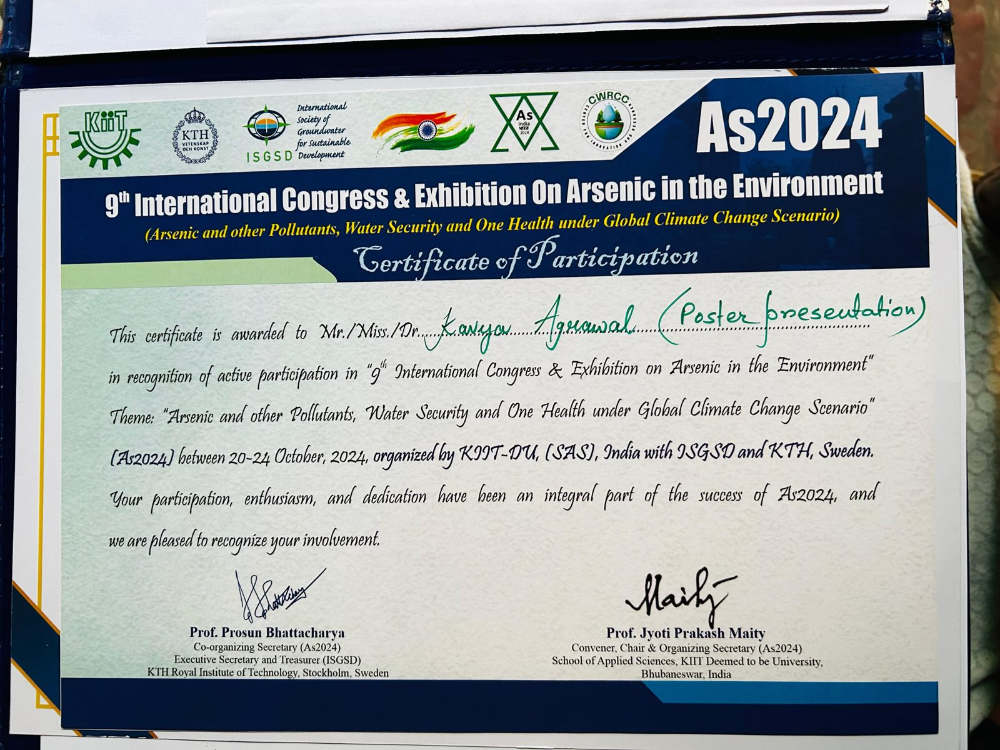
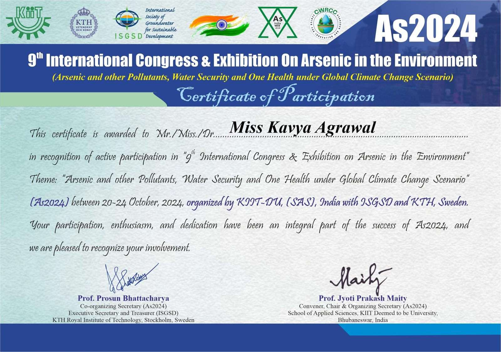
Theme: Arsenic and other Pollutants, Water Security and One Health under Global Climate Change Scenario. Organised by KIIT Deemed to be University with ISGSD and KTH Royal Institute of Technology, Sweden.
- Nov 2022
Problems and Prospects of Delhi's Drinking Water Supply
- Jul 2022
Educational Relevance of Ramayana in Modern India
Certificate
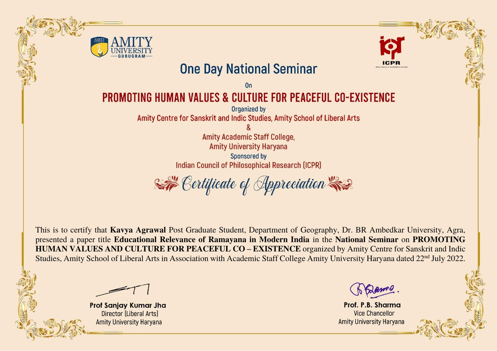
- May 2022
Digital Enhancement of Physical Space and Connective Turn in Tourism Industry during and Post-COVID-19 Period
- May 2022
Migrant College Students during Covid Pandemic: Evidence from the Field
- Apr 2022
Migrant College Students during Covid Pandemic: Evidence from the Field
Certificate
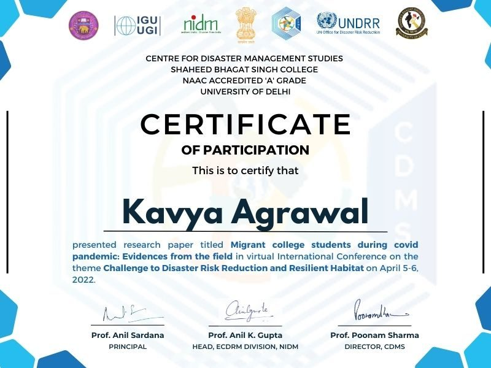